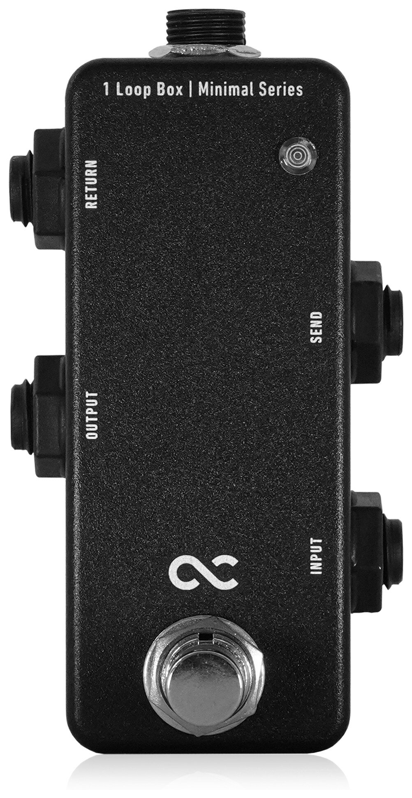
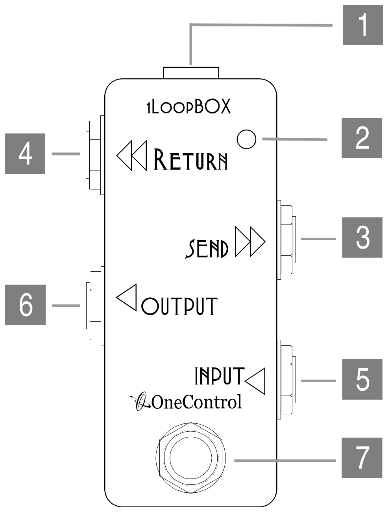

User's Manual

Thank you for your purchase of the MINIMAL 1Loop BOX by One Control.
The One Control 1 Loop Box was created to be the smallest 1 loop switcher possible. By using an array of PCB, One Control was able to become the first manufacturer in the world to create this small of a looper using PCB. Painstaking effort was put into this design to be able to create such a small designed PCB board that would fit into the 1 Loop’s compact case. In addition to the small size, the PCB design has created a much more durable product than current competitors on the market.
The 1 Loop Box has many different uses. When the 1 Loop is bypassed the input signal will go directly out of the output jack, but when the pedal is activated the input signal will come out of the send, and the signal that goes into the return will come out of the output jack.
- With the one loop, multiple effects can be routed to the effects send of an amp and quickly bypassed with one step. Also, vintage effects that affect your tone even when bypassed can now have a true bypass option.
- If you use the INPUT, SEND and OUTPUT only, the 1 Loop can also be used as an AB BOX. When you step on the footswitch you are essentially choosing whether the signal comes out of the send or out of the main output. That being said, you can attach whatever you’d like to the SEND and OUTPUT and toggle between the two of them. For example, you can switch between two amps or use the send as a tuner/mute switch.
- If you only use the INPUT, RETURN and OUTPUT, the 1 Loop Box can also be used as an instrument/input selector. Simply attach one input signal into the INPUT and the second signal into the RETURN. When the pedal is turned on the signal going into the RETURN will be the OUTPUT signal and when the pedal is off, the signal going into the INPUT will be the OUTPUT signal.
- If the INPUT and OUTPUT are the only two jacks being used on the 1 Loop, it becomes a switch. When the pedal is bypassed the signal will go directly to the OUTPUT. When the pedal is in use, the signal will be muted.
- In order to minimize size the 1 Loop cannot use a battery but because of its passive circuit capabilities it doesn’t need power to operate. Please note LEDs will not function when not connected to a power supply. Recommended power supply is the One Control EPA-2000.
Panel layout

- 1 9VDC INPUT
- Typical 9V center negative power supplies can be used.
- 2 LED
- It lights up when the loop is engaged.
- 3 SEND
- Sends the input signal via this jack when the loop is engaged; usually the jack connects to the input of an external guitar pedal.
- 4 RETURN
- Signal from this jack goes into OUTPUT jack when the loop is engaged. Usually this jack connects to the output of an external guitar pedal.
- 5 INPUT
- Input jack.
- 6 OUTPUT
- Output jack.
- 7 FOOT SWITCH
- True Bypass 3PDT. Engage or bypass the loop.
Specifications
| INPUT: | 9 Volt center negative 1mA |
|---|---|
| DIMENSIONS: | 54(W)x101(D)x48(H) mm (Jacks included) |
| WEIGHT: | 127g 4.48oz |
Warranty
Repairs or exchanges under warranty are subject to these warranty guidelines:
This product is covered under our warranty for the period of 1 year from date of purchase, as filled out on the warranty card. In the case the product needs to be shipped, the cost of shipping will be paid by the buyer.
The following are not covered by this warranty:
Fire, earthquake, natural disasters such as flooding, material breakage, or war. Warranty is void if there is any trace of repair or modification that is not performed or authorized by LEP International.
One Control by LEP International Co., LTD.
9-16 Suehiro Hanamaki
Iwate 025-0079, Japan
Phone: 0198-23-6600 Fax: 0198-29-4244